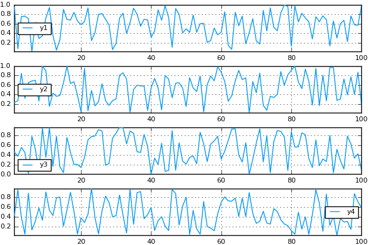

Layouts
As of v0.7.0, Plots has taken control of subplot positioning, allowing complex, nested grids of subplots and components. Care has been taken to keep the framework flexible and generic, so that backends need only support the ability to precisely define the absolute position of a subplot, and they get the full power of nesting, plot area alignment, and more. Just set the layout keyword in a call to plot(...)
It's helpful at this point to review terminology:
- Plot: The whole figure/window
- Subplot: One subplot, containing a title, axes, colorbar, legend, and plot area.
- Axis: One axis of a subplot, containing axis guide (label), tick labels, and tick marks.
- Plot Area: The part of a subplot where the data is shown... contains the series, grid lines, etc.
- Series: One distinct visualization of data. (For example: a line or a set of markers)
Simple Layouts
Pass an integer to layout to allow it to automatically compute a grid size for that many subplots:
# create a 2x2 grid, and map each of the 4 series to one of the subplots plot(rand(100,4), layout = 4)

Pass a tuple to layout to create a grid of that size:
# create a 4x1 grid, and map each of the 4 series to one of the subplots plot(rand(100,4), layout = (4,1))

More complex grid layouts can be created with the grid(...) constructor:
plot(rand(100,4), layout = grid(4,1,heights=[0.1,0.4,0.4,0.1]))

Advanced Layouts
The @layout macro is the easiest way to define complex layouts, using Julia's multidimensional Array construction as the basis for a custom layout syntax. Precise sizing can be acheived with curly brackets, otherwise the free space is equally split between the plot areas of subplots.
l = @layout [ a{0.3w} [grid(3,3) b{0.2h} ]] plot( rand(10,11), layout = l, legend = false, seriestype = [:bar :scatter :path], title = ["($i)" for i=1:11]', titleloc = :right, titlefont = font(8) )
Create inset (floating) subplots using the inset_subplots attribute. inset_subplots takes a list of (parent_layout, BoundingBox) tuples, where the bounding box is relative to the parent.
Use px/mm/inch for absolute coords, w/h for percentage relative to the parent. Origin is top-left. h_anchor/v_anchor define what the x/y inputs of the bounding box refer to.
# boxplot is defined in StatPlots using StatPlots gr(leg=false, bg=:lightgrey) # Create a filled contour and boxplot side by side. plot(contourf(randn(10,20)), boxplot(rand(1:4,1000),randn(1000))) # Add a histogram inset on the heatmap. # We set the (optional) position relative to bottom-right of the 1st subplot. # The call is `bbox(x, y, width, height, origin...)`, where numbers are treated as "percent of parent" histogram!(randn(1000), inset = (1, bbox(0.05,0.05,0.5,0.25,:bottom,:right)), ticks=nothing, subplot=3, bg_inside=nothing) # Add sticks floating in the window (inset relative to the window, as opposed to being relative to a subplot) sticks!(randn(100), inset = bbox(0,-0.2,200px,100px,:center), ticks=nothing, subplot=4)